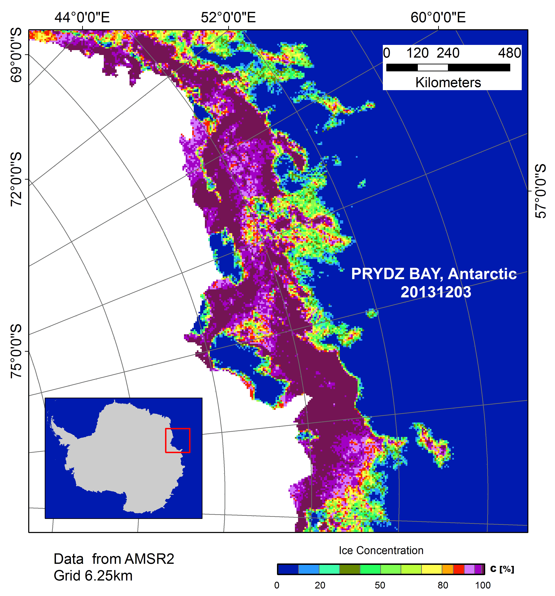
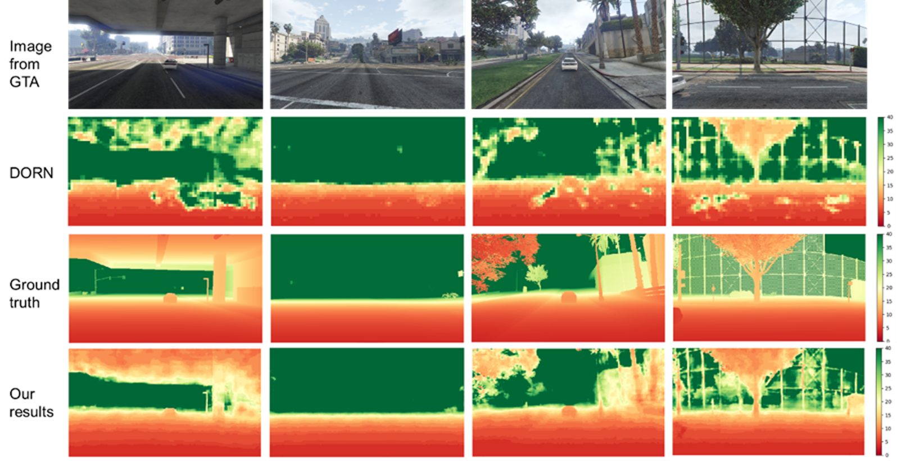

Phd-Remote Sensing Applied In Antarctica
Feature Extraction
Landsat8
7TB L1B level data index,
Landcover Mapping,
Climate Change,
Rock Outcrop

Time-series Sea Ice Change Monitoring
Navigation,
AMASR2,
Mapping,
Sea ice concentration

Quantify City Shrinkage
Urban Built-up Extraction
Beijing-Tianjin-Hebei Region,
Supervision Classification,
Neural Networks,
Landsat8

Monocular Depth Estimation
a novel framework of CNNs is proposed for monocular depth estimation based on deep ordinal regression network (DORN) and a U-net structure.
Publication